| 日付 | 2020年12月6日（日） |
|---|---|
| 山域 | 赤城・榛名 |
| メンバー | 家族（妻、長女・9歳、長男・7歳） |
| 山行形態 | 子連れ日帰り |
| アクセス | 車 |
| ルート (Map) | 古谷登山口駐車場 (8:49) - (9:06) 三岩通り登山口 - (10:06) 岩櫃山 (10:24) - (10:31) 東峰 (11:00) - (11:35) 岩櫃城址 (12:06) - (12:25) 尾根沢通り分岐点 - (12:51) 赤岩通り登山口 - (13:04) 古谷登山口駐車場 |
群馬県の北西部に岩櫃山と言う山がある。
名前の通り岩山で、以前から注目している山だった。
子供達はそろそろ岩山に登れる年齢になってきたので、
快晴の週末に満を持して岩櫃山に向かう。
古谷登山口駐車場に到着。標高460m。
駐車場から真正面に目指す岩櫃山が見えて、テンションが上がる。
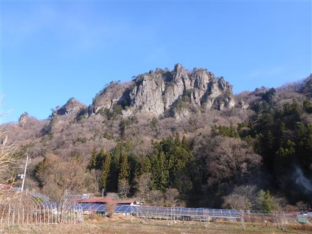
岩櫃と書かれた幟が並んでいる。
かつて岩櫃城があった山で、大河ドラマで撮影されたらしく、観光に力を入れているようだ。
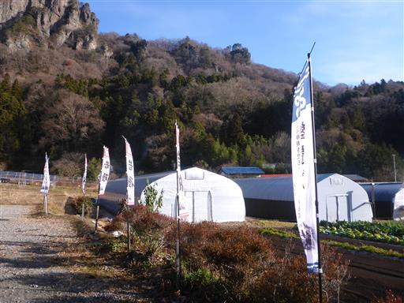
地面は霜で真白だ。日影はかなり寒い。
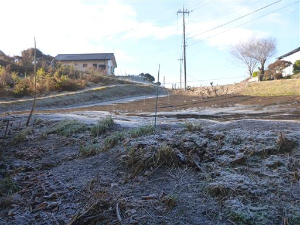
岩櫃山を眺めながら車道を歩いて登山口を目指す。
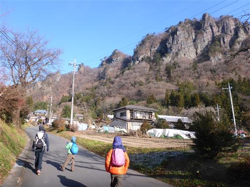
登山口近くに杖が置かれている。
有難いことだが、岩山で杖はちょっと危険かもしれない。
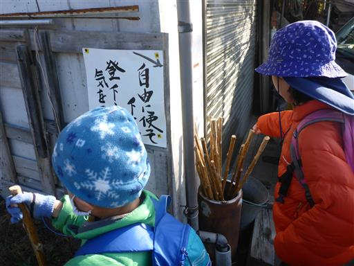
目指すは三岩通り登山口。
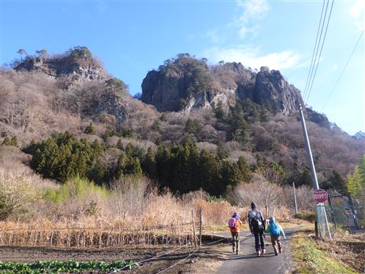
ニョキニョキと岩塔が突き立っている。
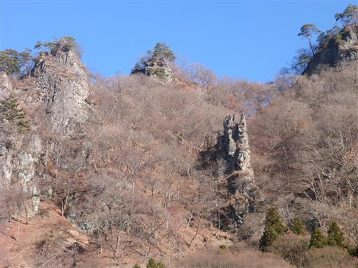
三岩通り登山口に到着。すでにここが三合目だ。
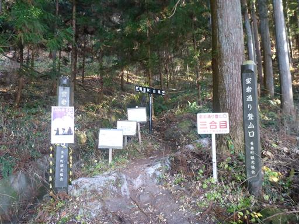
最初は植林地帯の中の登り。

標高の低い山なので、すぐに岩っぽい地形に変わってくる。
山の雰囲気は妙義山と似ている。
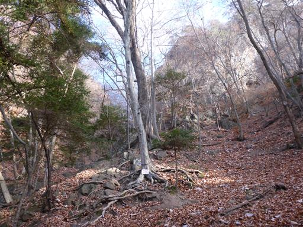
最初の鎖場が現れる。この辺りは楽勝だ。
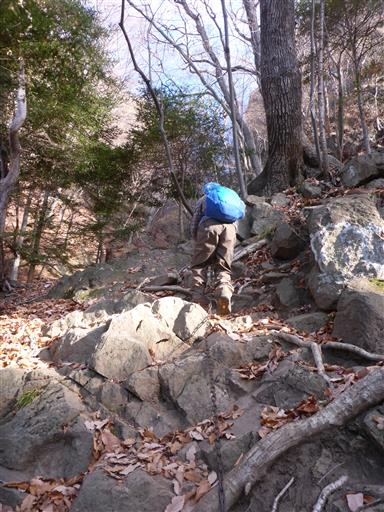
落ち葉積もる登山道。
紅葉は終わっているが陽の光が暖かくて気持ちが良い。
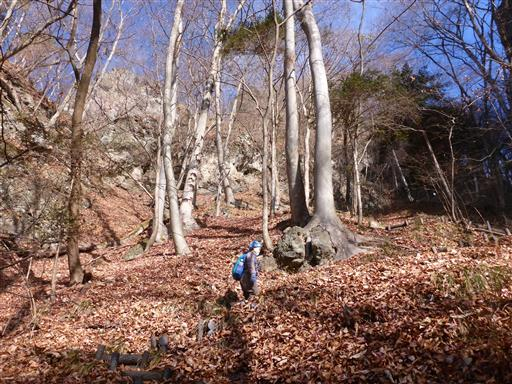
鎖場・梯子が連続する。
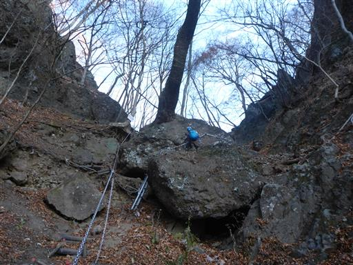
稜線に到着。ここで後続を待つ。
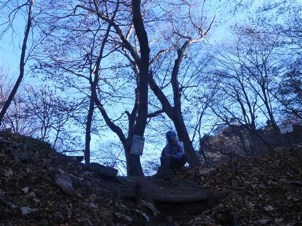
岩穴の中に石が積まれている。
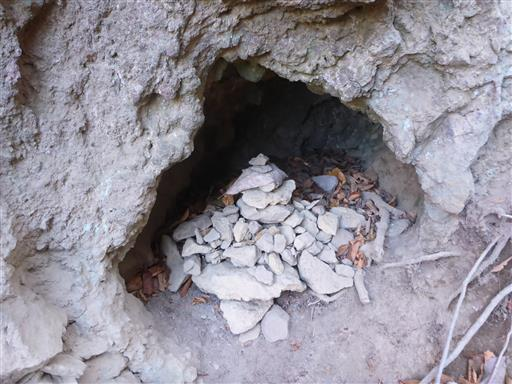
木の根でできた急斜面登山道。
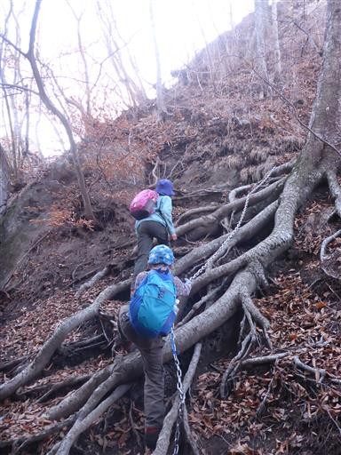
鎖場は続く。
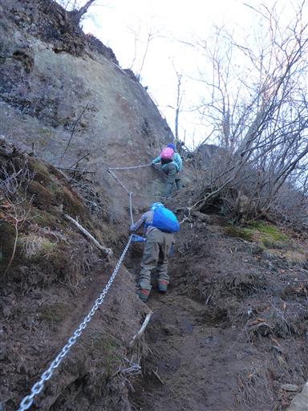
天狗のかけ橋方面に続く鎖場。
楽しそうな道だが、残念ながら通行止になっている。
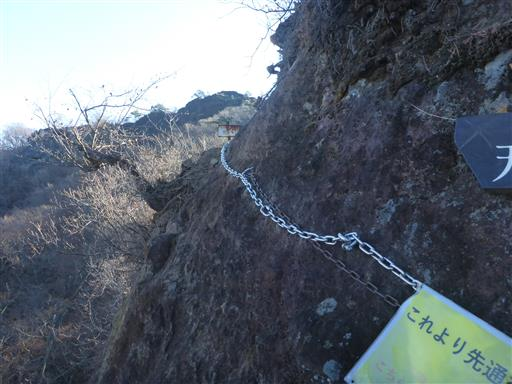
天狗のかけ橋。岩に大きな穴が開いており、その上が天狗のかけ橋となっているようだ。
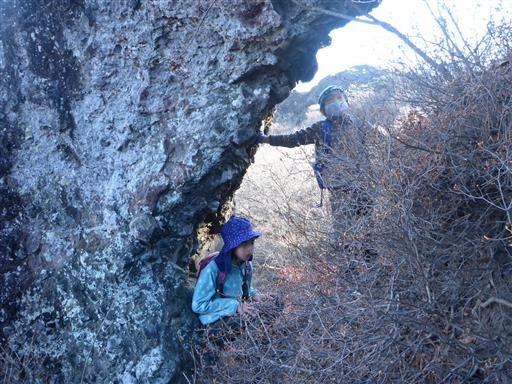
谷川岳方面の景色が広がる。もう雪で真っ白だ。
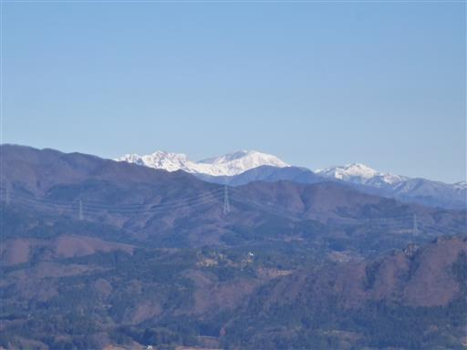
ここから本格的な鎖場になる。息子はすいすいと登って行く。
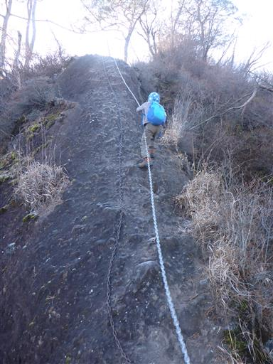
娘は苦戦。昔は岩場が好きだったが、いつの間にか登れなくなってしまった。
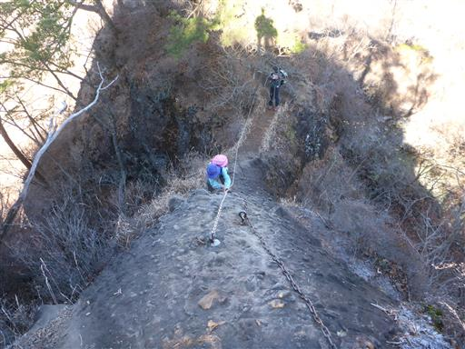
鎖場を登った先からの展望。真ん中の白い山は草津白根山だ。
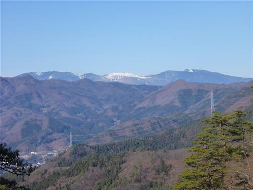
岩の左手に穴を発見。
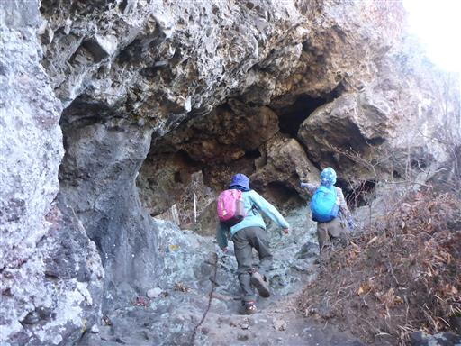
登山道はこの岩を潜って向こう側に付いている。
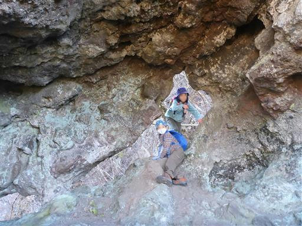
穴の前からの展望。白い山は浅間山だ。
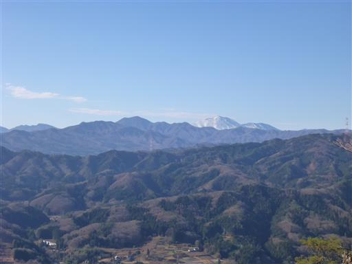
穴を潜った先も岩場が続く。梯子を登ると目の前に太陽が現れてかなり眩しい。
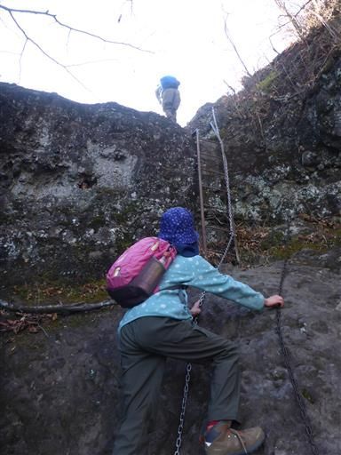
鎖場が連続するため、間隔は開く。
岩に腰掛けて後続を待つ。
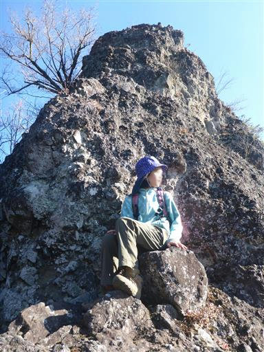
ここから先は崖の縁を歩くため要注意。
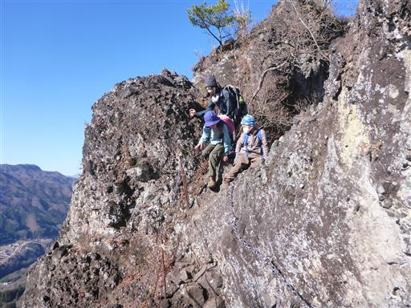
崖の上なので真下を見下ろすことができる。
真ん中に見える広場が車を停めた駐車場だ。
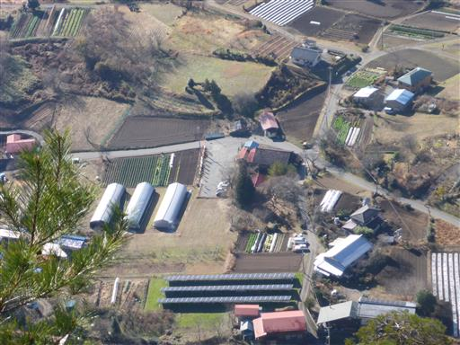
鎖が設置されているので、それほど危険度は高くない。
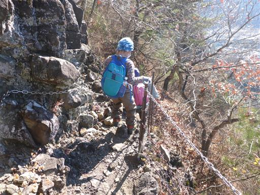
素晴らしい展望。山に囲まれた小さな町並が見渡せる。
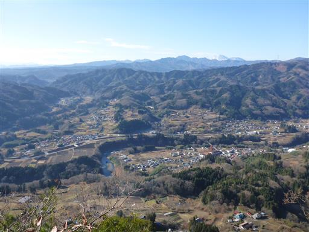
息子は終始ハイテンション。どんどんと先に進んでいく。
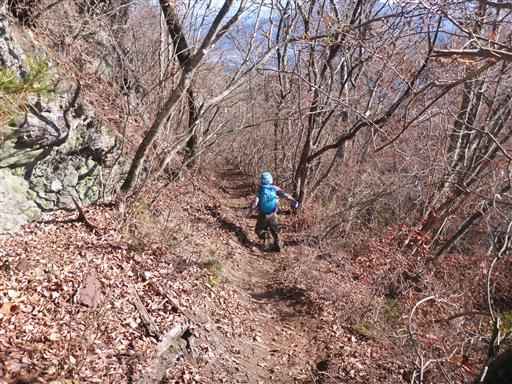
山頂に続く最後の岩場に到達。
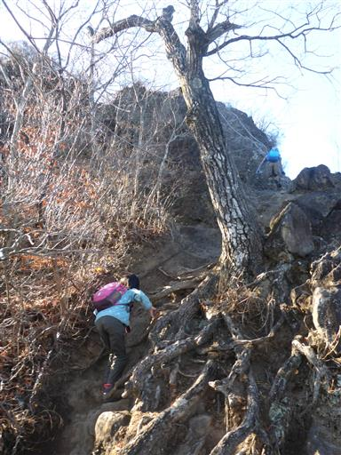
息子は楽勝で登って行く。アスレチック感覚でかなり楽しいようだ。
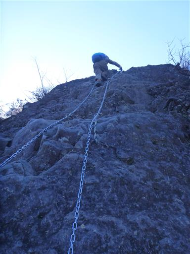
岩櫃山山頂に到着。標高803m。
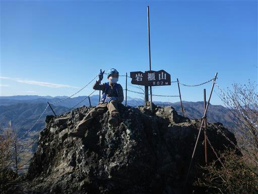
山頂には虫が多くて辟易する。
まだ時間も早いため、ここで昼食は取らずに休憩のみとする。
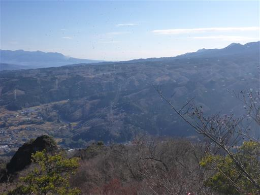
とは言え、360度の素晴らしい展望が広がるため、しばらく景色を楽しむことにする。
こちらは谷川岳方面。右手中央辺りにかつて登った嵩山も見えている。
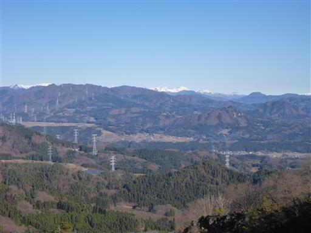
左に上州武尊山、右には日光の山々。
眼下に広がるのは中之条町を中心とする町並だ。
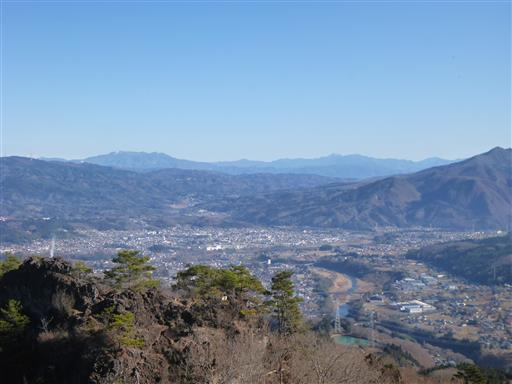
中央の目立つ山は小野子山。10年以上前に登った山だ。
右手奥は赤城山。
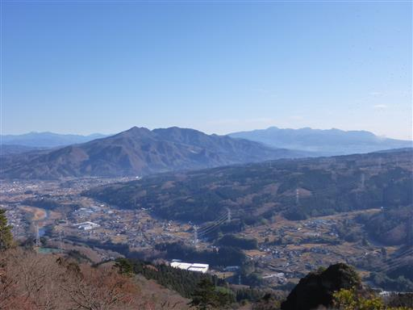
こちらは四阿山。
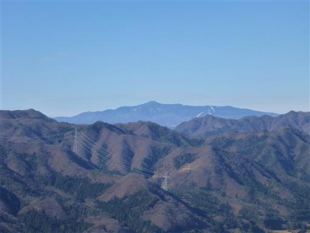
浅間山。群馬の名峰が一望のもとだ。
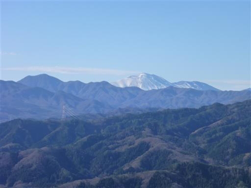
眼下には岩峰が連なっている。
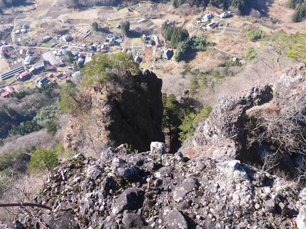
一通り展望を楽しんだら山頂出発。
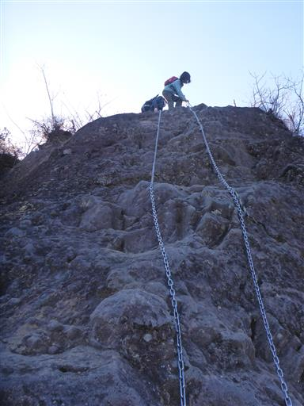
登りに使った道と分かれて岩櫃城址に向かう。
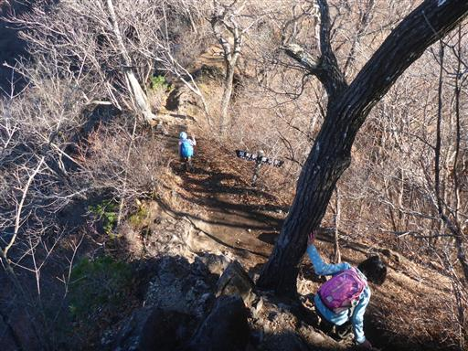
もう一方の山頂にとりかかる。こちらは比較的登りやすい。
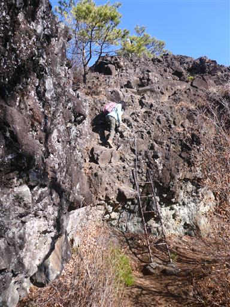
山頂に到着。こちらも展望は素晴らしい。
あまり虫はいないため、ここで昼食をとることにする。
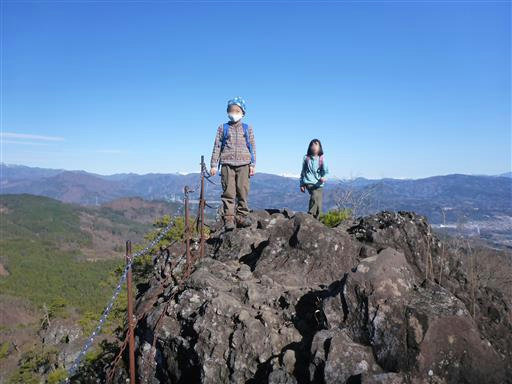
先ほど登った岩櫃山山頂部が良く見える。
ここから見ると、どうやって登ったのかと思うほど突き立った岩峰に見える。
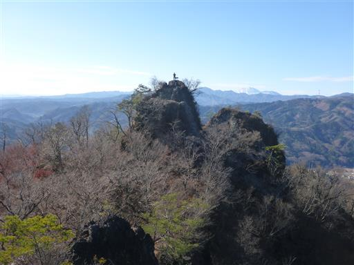
南に横たわるのは多くの峰を連ねる榛名山。
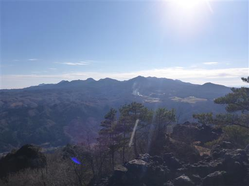
榛名山の中腹は緑色と茶色が複雑に絡み合っている。
緑色の部分は植林地帯と思うが、なぜこのような模様になるのか不思議だ。

昼食をとったら岩櫃城址に向かう。途中で団体登山者とすれ違う。
こんな大人数で登ったら狭い山頂はどうなってしまうのだろう？
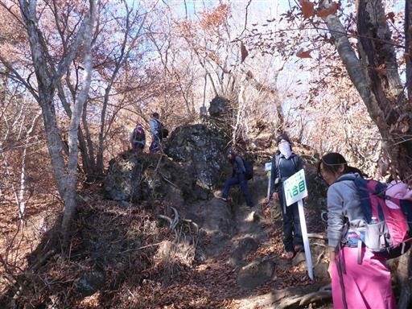
岩と岩の間に登山道が付けられている。
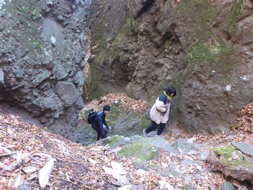
岩の間を縫うように下って行く。
巨大な岩の隙間の細い道。不思議な地形だ。
周囲は岩に囲まれており、威圧感がある。
背後に突き立つ岩峰。
岩場地帯を抜ける。岩櫃城址までは尾根通りと沢通りがあるが、尾根通りを選択。
登山道に突然、岩塔が現れる。
天狗岩と名付けられている。登山道にポツリと立つ岩で、これも不思議な岩だ。
岩櫃城址に到着。
東屋がある開けた平地だが、かつて城があった面影は残っていない。
ここでおやつ休憩をとる。
東屋のなかにてるてる坊主が掛かっている。
今日は見事な快晴になってくれた。
岩櫃城址を後にして来た道を戻る。帰りは沢通りを選択。
周囲は少々複雑な地形だがあちらこちらに標識は完備されている。

地面はホオノキの白い葉が目立つ。
周囲は再び岩だらけの地形になる。
尾根通りと沢通りの分岐点まで戻ったら下山開始。
この辺りは落ち葉が美しい。

下山道は2本あるが、赤岩通りを選択。
見るからに滑りそうな登山道。

最初の難関をクリアしたら、あとはもう難しい箇所はない。
周囲の岩壁を眺めながら下山する。
短い短い謎の鎖。
赤岩通り登山口に下山する。
ここは潜竜院跡と呼ばれる場所で、武田勝頼を迎え入れるための御殿を三日で造ったそうだ。
しかし勝頼はこの地に辿り着くことなく天目山で自刃したらしい。
車道を歩くとほどなく集落に到着。小さい山だと車道歩きも短くて楽だ。
無事駐車場に到着。朝は一番乗りだったが思った以上に車が増えている。
岩櫃山は程よい難易度の鎖場が連続して、非常に楽しい山だった。
また、登山道や山頂からの眺望は素晴らしいの一言で、
期待通りの非常に良い山だった。